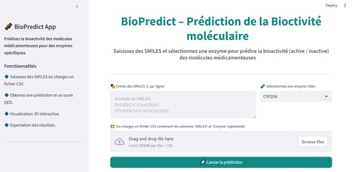
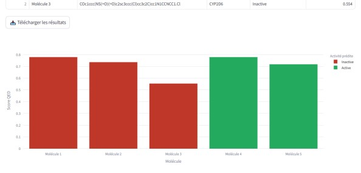
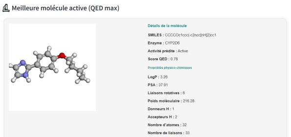
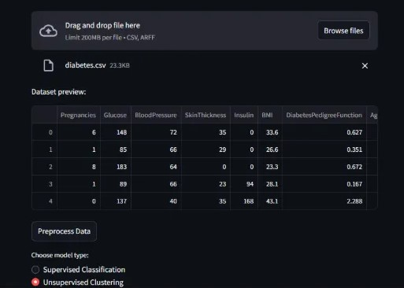
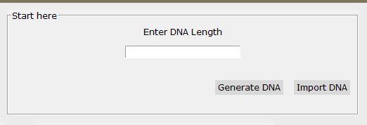
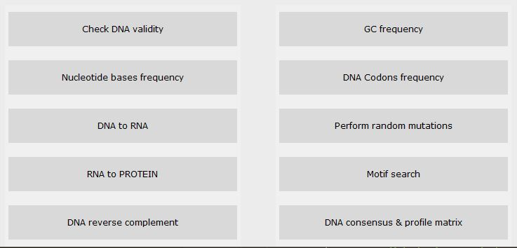
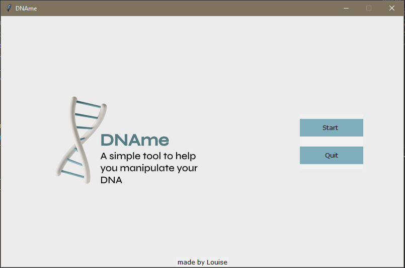
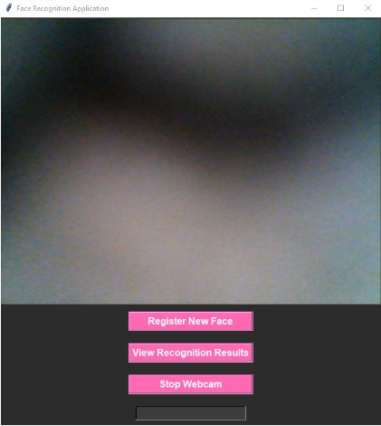

BioPredict
Designed and developed a bioinformatics system to predict drug molecule bioactivity using machine learning.
Achieved 85% accuracy in classifying molecules as active/inactive.
Used tools such as pandas, scikit-learn, RDKit, and matplotlib for data processing and visualization.
Request full thesis
My DataMiner
Built a Streamlit Data mining app that takes CSV datasets of disease-related records as input.
Performs complete data preprocessing, including cleaning missing values, encoding, normalization etc..
Supports both supervised and unsupervised learning.
Displays interactive visualizations, model performance metrics, and insights to support data exploration and decision-making.
Request full project




DNAme
Developed a lightweight DNA sequence analysis tool to identify genetic patterns or motifs.
Supported input of FASTA-format DNA sequences and performed basic matching, GC content calculation, and sequence cleaning.
Could be extended to detect mutations, generate reverse complements, or simulate transcription.
Request full project
Facial Recognition App
Built an app to register, detect, and identify individual faces.
Tracked entry/exit times, supported real-time webcam input.
Included dataset management and facial embeddings using deep learning.
Request full project
